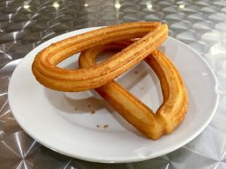

Home
Churros

These are crispy, cinnamonny Mexican fritters
Unfortunately, I have no idea how to cook. However, I am required to publish a small
recipe website. Follow this and any of my other recipes at your own risk.
Ingredients
- water
- sugar
- salt
- oil
- flour
- cinnamon
Steps
- Boil sugar, water, oil & salt
- Remove from heat and stir in the flour
- Stuff the dough in a pastry bag and extrude some strips
- Fry 'em up in hot oil 'til golden
- Drain the oil and roll 'em in the cinnamon
- Eat 'em up yum!